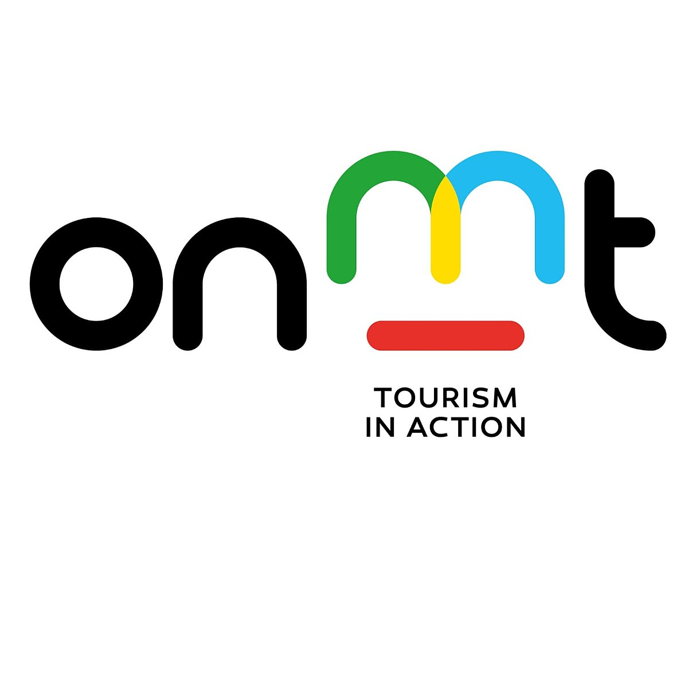
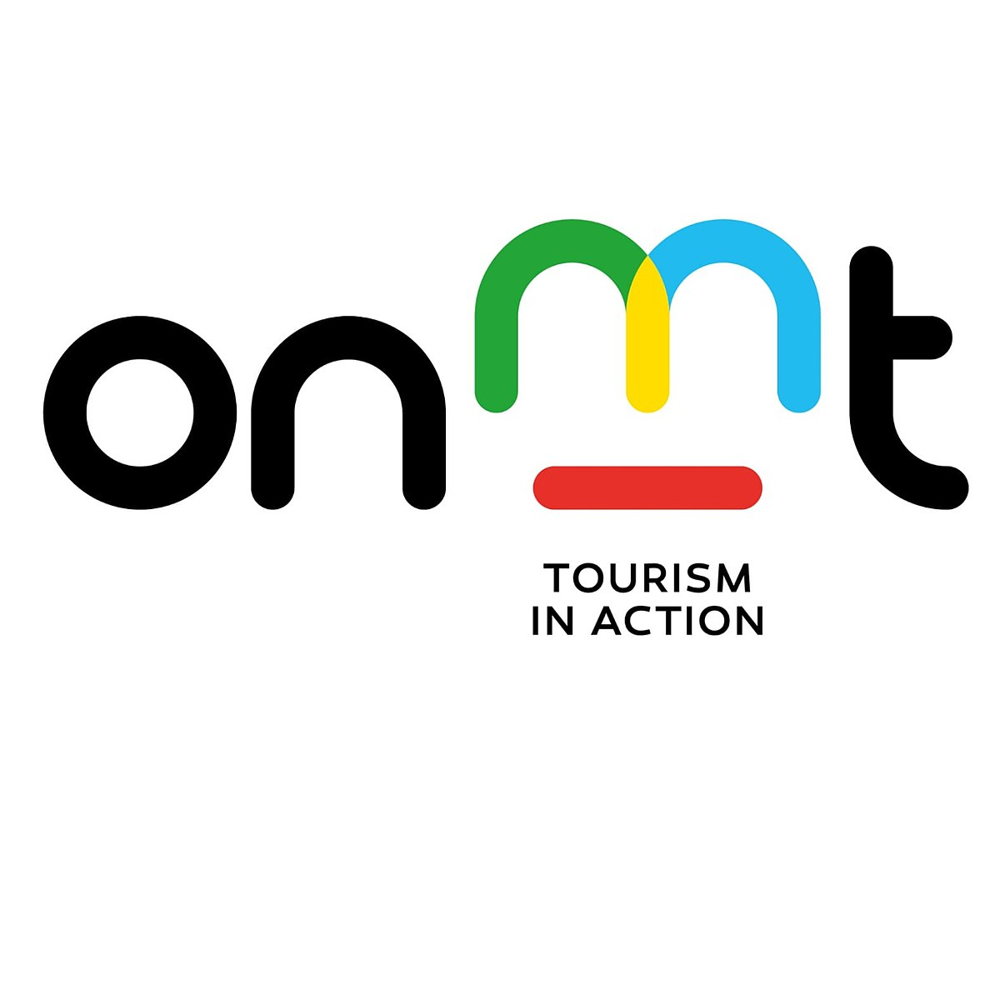

Nourrissage des chats
Dans une ville où les chats sont nombreux et affamés, notre groupe a décidé d'entreprendre une action de nourrissage. Après avoir acheté de la nourriture pour chats, nous nous sommes dirigés vers un lieu stratégique au marché pour distribuer les croquettes et la pâtée. Guidés par un habitant local, nous avons identifié les endroits où les chats se trouvaient, veillant à placer les gamelles discrètement. Nous avons ressenti une grande solidarité en travaillant ensemble pour cette cause, et les ronronnements des chats témoignaient de leur gratitude. Cette expérience nous a rappelé l'importance de prendre soin des animaux vulnérables, et nous avons décidé de poursuivre ces actions régulièrement pour aider ces chats.


 
